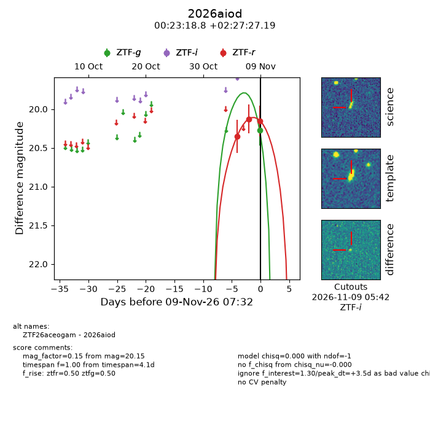
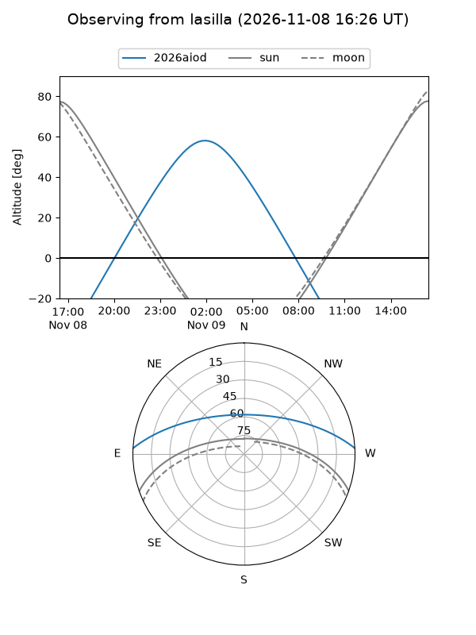
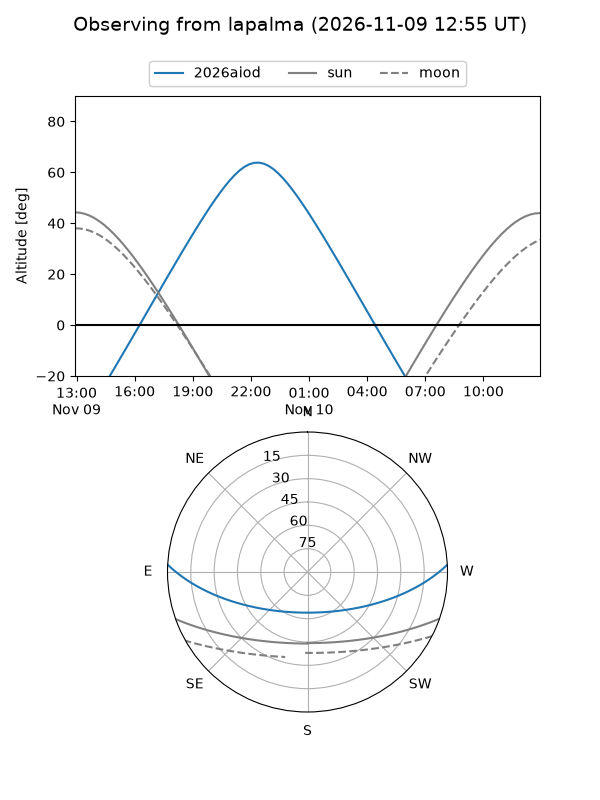
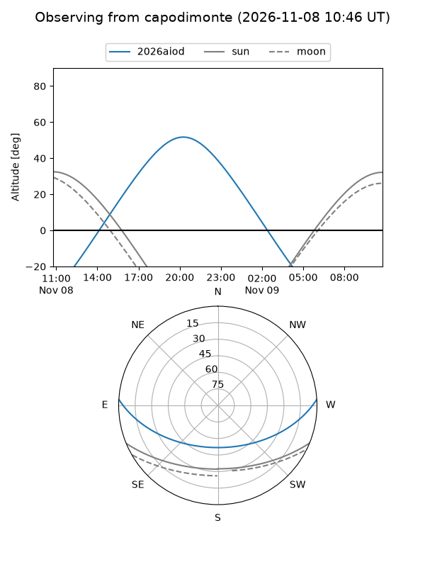
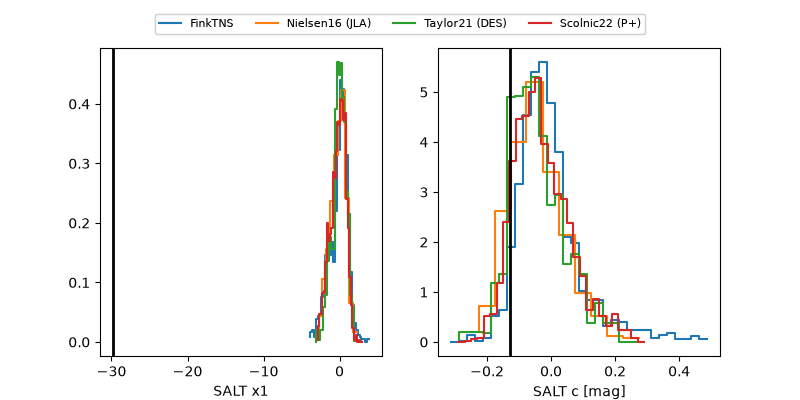

2026aiod
Target 2026aiod at 2026-11-09 07:34
Aliases and brokers:
FINK-ZTF: ztf.fink-portal.org/ZTF26aceogam
Lasair-ZTF: lasair-ztf.lsst.ac.uk/objects/ZTF26aceogam
ALeRCE-ZTF: alerce.online/object/ZTF26aceogam
YSE-PZ: ziggy.ucolick.org/yse/transient_detail/2026aiod
TNS name: wis-tns.org/object/2026aiod
Direct TNS query: direct search
alt names
ZTF26aceogam (ztf,fink_ztf)
2026aiod (tns,yse)
Coordinates:
equatorial (ra, dec) = 5.8284,+2.45755
equatorial (HMS+DMS) = 00:23:18.81,+02:27:27.19
galactic (l, b) = (108.9265,-59.64724)
Flags:
peak dt: +3.5
Photometry:
last ztfg=20.28, ztfr=20.15
1 ztfg, 3 ztfr detections
Lightcurve

Visibility



Additional plots
